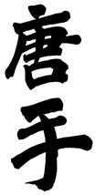
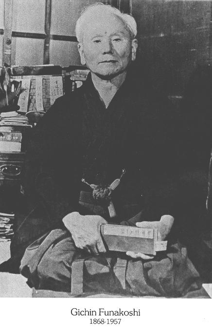
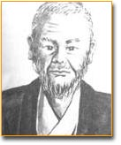
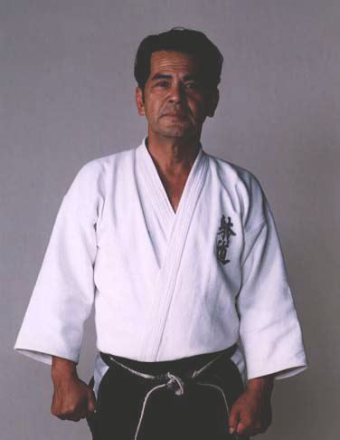
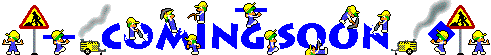
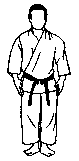

Geschiedenis
In allerlei boeken en op het internet is veel te vinden over de geschiedenis van Karate. Deze telt vele stromingen en nog meer grootmeesters. Ik heb getracht dit alles te filteren en er een duidelijk samenhangend geheel van te maken. Let wel, de geschiedenis van het karate gaat ver terug en vele verhalen zijn in eerste instantie mondeling doorverteld. Over de juistheid van sommige anekdotes en overleveringen kan men alleen maar gissen...
Er is echter nooit bewijs gevonden dat deze Bodhidharma echt geleefd heeft. Misschien staat hij in de legenden als symbool voor meerdere personen die in die periode hebben bijgedragen tot de ontwikkeling van dit Kempo. Een meer profane verklaring is dat veel Chinese kloosters zich in afgelegen gebieden bevonden en vaak het doelwit waren van rondtrekkende roversbenden. Om zich tegen deze rovers te kunnen weren, gingen de monniken zich bedienen van verdedigingstechnieken die aansloten bij hun leer: een verdedigingskunst waarbij geen gebruik hoefde te worden gemaakt van wapens. Deze monniken werden later de geweldigste vechters van China en de stijl die ze beoefenden werd Shaolin-Zsu-tempelboks of Kempo genoemd. De meest bekende hiervan afgeleide vechtkunst is het huidige Shaolin Kung Fu.


Deze betekenis is echter nog geen 100 jaar oud, want het duurde tot omstreeks 1920 voordat een inwoner van Okinawa deze verdedigingskunst in het openbaar demonstreerde in Japan. Zijn naam was Gichin Funakoshi, geboren in 1868 in Shuri, Okinawa. De eerste Karate-dojo in Japan heette “Shoto Kan”, naar een door Gichin Funakoshi gebruikt pseudoniem: Shoto, dat zoveel betekent als “pijnboomgeruis” (als jongeman liep hij graag bij een tempel waaromheen veel pijnbomen stonden. Het geruis van de wind door deze bomen verschafte hem de innerlijke rust die hij voor de Karate-training nodig had).
De oprichter van de stijl Genseiryu is Seiken Shukumine (1925-2001).
De wortels van het Genseiryu Karate liggen in een stijl van
het Okinawa-Karate dat Shuri-Te heet. Deze stijl werd gecombineerd
met de twee andere grote stijlen door Sokon “Bushi” Matsumura (1809-1898)
tot Shorin-Ryu. Als meester (Sensei) had hij beroemde leerlingen
als Gichin Funakoshi (oprichter van Shotokan, zie hierboven), Yasutsune
(Anko) Itosu, Chotoku Kyan en Yasutsune Asato. Een van de minder bekende
leerlingen was Bushi Takemura. Hij ontwikkelde een versie van de
Kushanku Kata die vandaag in het Genseiryu nog steeds geoefend
wordt. Eén van Takemura's leerlingen was Soko Kishimoto (1866-1945). 
Eén van de leerlingen van Soko Kishimoto was de in 1925 in Naha-shi (op
het Japanse eiland Okinawa) geboren Seiken Shukumine. Shukumine had
geen familie die hem karate kon bijbrengen. Toen hij 8 jaar oud was kreeg
hij les van Anko Sadoyama, een meester in Koryu Karate. De
training begon steeds met 50 sprongen over een snelgroeiende struik. Een
wat geromantiseerde anekdote vertelt dat toen Shukumine op een dag een wandeling
maakte, hij verrast werd door een slang die hem wilde bijten. Net als bij
zijn sprongen over de struik, sprong hij ook nu over de slang. De slang
werd gedood door Soko Kishimoto (1866-1945), die dit voorval had
gezien. Een mooie anekdote, maar zeer waarschijnlijk verzonnen. Vanaf 14-jarige
leeftijd werd hij Kishimoto’s leerling, en bleef dit tot aan zijn dood.
Een ander verhaal dat rondgaat is dat toen Shukumine werd geïntroduceerd
bij Kishimoto, deze aan Shukumine vroeg om bij de deur te gaan staan. Kishimoto
pakte plotseling een pook, die in de brandende open haard stak en gooide
met volle kracht een gloeiend stuk houtskool richting Shukumine. Die wist
het in een snelle reactie te ontwijken en het houtskool kletterde tegen
de deur. Daarop besloot Kishimoto hem als één van zijn laatste leerlingen
te nemen. Waarschijnlijk is ook dit een verzonnen verhaal, want in werkelijkheid
(is gebleken uit overleveringen van oud-leerlingen) heeft Shukumine juist
lang moeten aandringen voordat Kishomoto zich uiteindelijk bereid toonde
om hem les te geven. Het schijnt ook dat Kishimoto in zijn leven slechts
negen kohai (=leerlingen) had geaccepteerd en zijn laatste twee waren
Shukumine en Seitoku Higa. Soko Kishimoto stierf in 1945 tijdens
de Slag om Okinawa.
Tijdens de Tweede Wereldoorlog werd Shukumine op 18-jarige leeftijd opgeroepen
voor de militaire dienst. Hij werd geplaatst in de marinedivisie van het
Japanse Kamikaze Corps. Hier werd hij opgeleid tot Kaiten-piloot
(éénmans-torpedo). Shukumine ontwikkelde een speciale techniek en strategie
om met de wetenschap om te gaan dat hij wellicht ook ingezet zou kunnen
worden in de oorlog. Hij probeerde een manier te bedenken om zijn karatetechnieken
om te zetten naar een methode om in de Kaiten torpedo’s te kunnen
ontwijken.
Shukumine demonstreerde in 1949 voor de eerste keer zijn Karate voor het
publiek in de stad Ito in Japan.In oktober 1950 nam hij deel aan een Karate-expositie,
georganiseerd door Nippon TV. Hij deed dit samen met andere grote namen
als Ryusho Sakagami (Itosu-kai), Hidetaka Nishiyama (JKA), Yasuhiro
Konishi (Ryobu-kai), H. Kenjo (Kenshu-kai), Kanki Izumikawa
en Shikan Akamine (Goju-ryu). Shukumine demonstreerde o.a. de Kata
Kushanku Dai, Tameshiwari (= breektechniek, in dit geval het doorslaan
van 34 dakpannen met shuto) en Hachidan-tobi-geri (springende
trap met 8 ‘kicks’ in één sprong).
In 1953 instrueerde Shukumine de troepen op de militaire basis Tachikawa.
Zijn Karate verspreidde zich snel over de rest van Japan en hij noemde de
stijl Genseiryu (玄制流). In het
Japans bestaat de naam uit drie karakters (Kanji). Het eerste is Gen
(玄) en heeft meerdere betekenissen, zoals 'mysterieus', 'universum'
maar ook 'een scherpzinnige en diepe waarheid'. Het tweede karakter is Sei
(制) en laat zich vertalen in 'controle', 'systeem', 'wet' of 'regel',
maar ook in 'het creëren van (een) vorm'. Het laatste teken is Ryu
(流) hetgeen simpelweg 'stijl' of 'school' betekent. De combinatie
Gensei (玄制) zou kunnen worden vertaald in 'controle
over het universum', maar het lezen van Japanse Kanji is niet zo simpel.
In deze combinatie wordt de betekenis meer zoiets als ‘het najagen van de
diepe waarheid en het verhelderen ervan door de vorm’. Dit moet worden gezien
op fysiek maar ook op spiritueel vlak.
Soms wordt ook gesproken van Genseikan, waarbij kan (館)
ook weer zoveel betekent als ‘school’, maar meer in de zin van de plaats
waar het plaatsvindt (gebouw). In 1955 werd Genseiryu officiëel
erkend. Shukumine kreeg op 31-jarige leeftijd (in 1956) de hoogste graad
in karate, de 8e dan (in Kyoshi).
Shukumine publiceerde in 1964 het boek “Shin Karatedo Kyohan”, waarin
hij de technieken en tactieken van het Genseiryu Karate beschrijft.
In 1962 introduceert hij een verdere ontwikkeling van het Genseiryu Karate
dat hij Taido noemt, een zeer acrobatisch uitziende Budo-discipline.
Dit is een nieuwe oosterse vechtkunst, dat wel zijn wortels in het Genseiryu
Karate heeft, maar niet als karate wordt gezien. Ook over deze vechtkunst
schreef hij een boek, namelijk "Taido gairon" (1988), waarin
hij de basisprincipes en -technieken van het Taido beschrijft. Naast Taido
bleef sensei Shukumine echter ook betrokken bij Genseiryu en stond
tot aan zijn dood aan het hoofd van de Wereld Genseiryu Organisatie.
Dit laatste is tegenstrijdig met wat veel mensen (voornamelijk van de afsplitsing
Genseiryu Butokukai) zeggen en schrijven, maar deze betrokkenheid
wordt onderschreven door deze brief
van de hand van sensei Shukumine zelf uit 2001, kort voor zijn dood.
{kind=link}
Pas in de jaren '60 begon Genseiryu zich buiten Japan te verspreiden,
naar de USA, Europa, Zuid-Amerika en Afrika. Op 26 november 2001 overleed
Shukumine, na lange tijd ziek te zijn geweest, aan een hartstilstand. Hij
werd 75 jaar oud. Vanaf 16 november 2003 werd besloten om binnen het Genseiryu,
wereldwijd het door Shukumine gepubliceerde boek "Shin Karatedo Kyohan"
te gebruiken als leidraad voor het Genseiryu. Hierin staan ook de
kata
beschreven die we beoefenen, o.a. Ten-i no, Chi-i no, Jin-i no, Naihanchi
en Sansai no Kata. Deze internationale overeenkomst werd ondertekend
door vertegenwoordigers van Genseiryu uit de gehele wereld overkoepeld
door de World/European Genseiryu Karatedo Federation (WGKF).
In deze federatie zit ook de Japanse tak, Genseiryu Karatedo Honbu
Dojo (waarbij Honbu Dojo zich laat vertalen als "Hoofdkwartier").
Deze Japanse organisatie is lid van Nippon Karatedo Rengoukai.
Deze laatste is lid van de Japan Karatedo Federation (JKF)
en daarmee is de Japanse Genseiryu Karatedo Honbu Dojo automatisch
óók lid van de JKF. De President van Japanse Genseiryu
Karatedo Honbu Dojo is tevens de president van de WGKF, sensei Yasunori
Kanai. Hij is ook benoemd tot hoofd-instructeur van de Wereld Genseiryu.
Daarvoor waren dat sensei Yamada en sensei Saito. Allen zijn ze benoemd
door sensei Shukumine om de leiding van de Wereld Genseiryu op zich
te nemen, daar sensei Shukumine zelf vanaf 1962 de meeste tijd stak in Taido
en deze taak liever uit handen gaf. De genoemde overeenkomst van de WGKF
is ook ondertekend door sensei Nobuaki Konno, de oprichter en vertegenwoordiger
van Genseiryu Nederland en daarnaast Directeur-Generaal van de WGKF.
Een kopie van deze 'agreement' staat hier rechts. Klik erop om te
vergroten (gebruik de 'back button' van je browser om hier terug
te komen). ---->
Een aantal scholen heeft besloten om zich niet aan deze internationale
afspraak te houden en de beginnerskata te vervangen door die uit het Shotokan
(de Heians), omdat dit interessanter (lees: competatiever) is voor
wedstrijden. In een tekst van sensei Shukumine kan men lezen dat de Ten-i
no, Chi-i no en Jin-i no kata bij Genseiryu horen en
het is natuurlijk wel vreemd dat mensen die claimen Genseiryu te
trainen deze specifieke basiskata niet trainen. Zij zonderen zich hiermee
af van het eigenlijke Genseiryu en vormen daarmee een 'stijlgroepering'
die de toevoeging 'Butokukai' dient te gebruiken. Hun overkoepelende
organisatie is de Nippon Karatedo Butokukai, opgericht in 1962. Tegenwoordig
noemen ze zich ook wel, meer 'internationaal' klinkend, de Genseiryu
(Butokukai) Karatedo International Federation. Deze organisatie wordt
sinds 1971 geleid door sensei Tosa, een oud-leerling van sensei Shukumine.
Helaas kregen zij een onenigheid over de toekomst van het Genseiryu Karate,
met name over de kata's, die zo ver uit de hand liep dat Tosa uiteindelijk
Shukumine de rug toe keerde en zijn eigen weg ging. Tosa schreef ook een
boek over het Genseiryu Karate, "Genseiryu Karatedo Kyohan
2", waarin Shukumine nog een voorwoord schreef, vermoedelijk nog
vóórdat ze de onenigheid kregen. Tosa heeft deze woorden alsnog
gebruikt, hoogstwaarschijnlijk om zijn boek verkoopkrachtiger te maken.
De stijl Butokukai is in Japan wel redelijk groot, maar erbuiten
niet. Wel is in Denemarken een leraar actief die zich Peter Lee noemt.
Hij gebruikt niet zijn èchte achternaam om nog onbekende reden. Deze jongeman
(geb. 1971) claimt al de 5e dan te hebben, maar het vreemde hieraan, buiten
zijn erg jonge leeftijd, is dat hij zo'n vier jaar voordat hij de
4e dan claimde nog de blauwe band had (in Denemarken kan dit
overigens 2e kyu betekenen)! Hier doe je normaal zeker 10, eerder 15 jaar
over! Dan-graden krijg je normaal niet zomaar, zeker niet de 4e of de 5e
dan. Zijn 5e dan kreeg hij dan ook van zijn leraar Tosa en is niet
erkend door de W.G.K.F. en ook niet door de Deense Karatebond, de DKF. Vragen
over zijn dangraden gaat hij steeds uit de weg. De credabiliteit van deze
persoon is dan ook zéér te betwijfelen. Vooral omdat hij op
zijn site een forum heeft waarin erg veel onjuiste informatie wordt verspreid
en bepaalde personen binnen de W.G.K.F worden belasterd met valselijke aantijgingen.
Hij doet wel aardig zijn best om geloofwaardig te klinken, zoals beweren
dat hij al 15 jaar onderzoek doet, maar op veel vlakken spreekt hij zich
tegen en hij is nog nóóit met bewijsmateriaal aangekomen.
Aangeraden wordt dan ook om de site en het forum van deze persoon te mijden.
Overigens, de genoemde tekst van sensei Shukumine is zowel in
het Japans als in het
Engels terug te vinden op de kata-pagina van Genseiryu
Nederland.
Andere stijlen die zijn afgeleid van Genseiryu zijn o.a.: Genwakai,
Keneikai, Ryounkai, Seidokai en Butokukai.
Er zijn inmiddels vele karatestijlen ontwikkeld. Enkele andere stijlen die
niet direct iets met Genseiryu te doen hebben zijn: Shotokan,
Wado-Ryu, Kyokushinkai, Shito-Ryu, Goju-Ryu.


OSU!